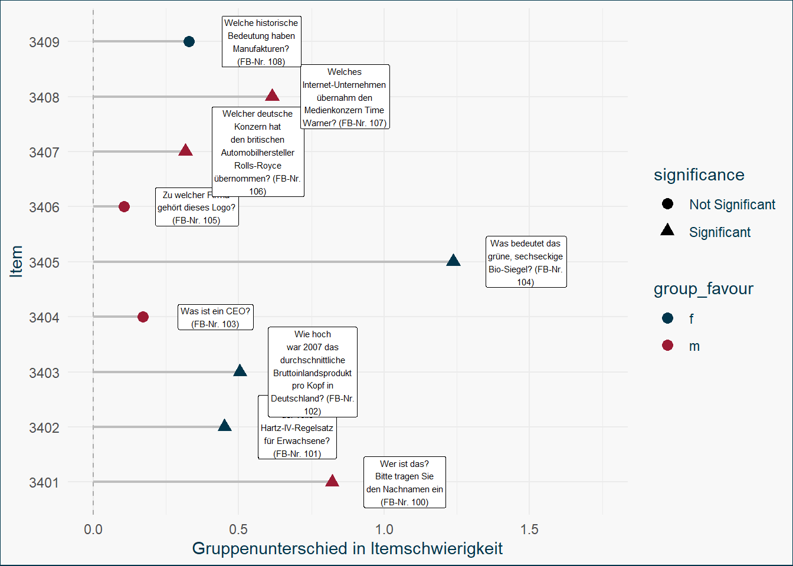

3. Differential Item Functioning
Übung
In diesem Kapitel führen wir eine DIF-Analyse für ein 1PL-Modell durch: zuerst mit den im letzten Kapitel gelinkten Daten, und dann noch einmal “in einem Guss”. Dadurch wird hoffentlich deutlicher, was im Hintergrund abläuft.
Foto von Martin Wettstein auf Unsplash
## Optional. Lädt Plotting-Funktionen
source(here::here("R", "plot_functions.R"))
## Daten laden, aufbereiten und Kalibrieren
qa_dat_wide <- readRDS(here::here("raw_data", "qa_dat_wide.rds"))
qa_f <- qa_dat_wide %>%
filter(gender == 1)
qa_m <- qa_dat_wide %>%
filter(gender == 2)
tam_f <- tam(qa_f[, 6:ncol(qa_f)], verbose = FALSE)
tam_m <- tam(qa_m[, 6:ncol(qa_m)], verbose = FALSE)
tam_link <- tam.linking(list(tam_f, tam_m), type = "SL")N = 2, M = 5 machine precision = 2.22045e-16
This problem is unconstrained.
iterations 7
function evaluations 9
segments explored during Cauchy searches 1
BFGS updates skipped 0
active bounds at final generalized Cauchy point 0
norm of the final projected gradient 4.27656e-07
final function value 0.00180261
final value 0.001803
convergeddifficulty_link_f <- tam_link$parameters_list[[1]]$xsi
difficulty_link_m <- tam_link$parameters_list[[2]]$xsi1 Waldtest
Wir werden einen Waldtest durchführen, einfach weil man hier das grundlegende Vorgehen ganz gut sehen kann. Wie im Theorieteil besprochen gibt es aber viele verschiedene Optionen, implementiert in diversen Paketen. Für diese Übung werden wir mit mirt und equateIRT arbeiten.
1.1 Kalibrierung
Zuerst müssen wir die Daten noch einmal kalibrieren (andere Pakete ermöglichen es auch, beides direkt in einer Funktion zu kombinieren).
Dafür nutzen wir diesmal aber mirt, weil equateIRT den Output daraus verarbeiten kann.
Fitte jetzt mit mirt ein Raschmodell auf beide Subgruppen seperat (männlich und weiblich). Der Datensatz darf nur die Itemspalten enthalten. Setze SE = TRUE um die Modell-Informationsmatrix zu berechnen, das ist gleich für den Waldtest nötig.
m_f <- qa_f %>%
## Entfernen aller Spalten, die keine Itemantworten enthalten
select(-ID, -gender, -bundeslandStudium, -spiegelReadingfreq, -age) %>%
## Fitten mit mirt
mirt(itemtype = "Rasch", SE = TRUE, verbose = FALSE)
m_m <- qa_m %>%
select(-ID, -gender, -bundeslandStudium, -spiegelReadingfreq, -age) %>%
mirt(itemtype = "Rasch", SE = TRUE, verbose = FALSE)1.2 Waldtest
Nutze jetzt die Funktion dif.test() aus dem Paket equateIRT um den Waldtest durchzuführen. Nutze, wie in der vorherigen Übung, die Stocking-Lord Methode zum linken. Welche Items zeigen laut Waldtest DIF?
Schau dir wieder mit ?dif.test die Dokumentation an um die Einstellungsmöglichkeiten für die Funktion zu sehen.
dif_test <- dif.test(est.mods = list(m_f, m_m),
method = "Stocking-Lord",
purification = FALSE)
dif_test
Test for Differential Item Functioning
Item parameters tested for DIF: intercept
Equating method used: Stocking-Lord
Reference group: T1 Focal group: T2
Item purification not applied
statistic p.value
3401 12.140 0.000493 ***
3402 4.127 0.042210 *
3403 5.460 0.019459 *
3404 1.671 0.196099
3405 42.451 7.25e-11 ***
3406 0.901 0.342624
3407 5.004 0.025285 *
3408 14.929 0.000112 ***
3409 0.857 0.354487
---
Signif. codes: 0 '***' 0.001 '**' 0.01 '*' 0.05 '.' 0.1 ' ' 1Mit purification = TRUE würde ein iteratives Vorgehen verwendet werden, bei dem nacheinander DIF Items entfernt werden, um die Personenfähigkeit ohne die komprimierenden Items zu schätzen. Weil wir aber gleich die Ergebnisse mit unserem manuellen Vorgehen vergleichen wollen, verzichten wir darauf.
Zuerst einmal zeigen laut Waldtest viele der Items bei einem Signifikanzniveau von 0.05 DIF. Das ist aber auch nicht weiter verwunderlich, da der Test sicherlich nicht in Hinblick auf die Vermeidung von DIF konstruiert wurde.
1.3 Vergleich mit manuellem Linking
Da in dif.test() automatisch gelinkt wurde, können wir jetzt einmal die Ergebnisse aus diesem Vorgehen mit dem aus dem manuellen Linking vergleichen.
So sehen die Itemparameter aus, die von dif.test() berechnete wurden:
dif_test$coef_trasf[[1]]
beta1
3401 -2.40978789
3402 -0.01907878
3403 -0.19102453
3404 0.75291490
3405 0.19096995
3406 0.92972284
3407 -0.95266283
3408 -0.30686976
3409 1.65436012
[[2]]
beta1
3401 -1.5885977
3402 -0.4704207
3403 -0.6954343
3404 0.9232955
3405 -1.0471252
3406 1.0361797
3407 -0.6360839
3408 0.3085281
3409 1.3261040Und das hier waren die Parameter, die wir mit TAM gelinkt haben:
difficulty_link_f[1] 2.40949640 0.01907487 0.19099166 -0.75279480 -0.19093832 -0.92957750
[7] 0.95251466 0.30681776 -1.65412846difficulty_link_m[1] 1.5018798 0.3836840 0.6087014 -1.0100511 0.9603988 -1.1229350 0.5493499
[8] -0.3952782 -1.4128572Was fällt auf?
Zuerst einmal scheinen die Vorzeichen der Itemschwierigkeiten vertauscht zu sein. Wir haben in dif.test() also die Itemleichtigkeiten geschätzt. Das ist aber leicht durch eine Multiplikation mit -1 zu beheben.
Ansonsten scheinen mirt und tam die gleichen Ergebnisse bei der Kalibrierung bekommen zu haben. Das Linking ist auch ähnlich, allerdings nicht exakt, obwohl wir die gleiche Methode verwendet haben. Wir könnten jetzt noch auf die Suche gehen, was genau beide Funktionen per default anders machen, aber für uns soll das erst einmal reichen.
1.4 Beurteilung
Wir haben jetzt also gesehen, was die dif.test() Funktion unter der Haube macht und Signifikanzwerte erhalten, die uns potenziellen DIF anzeigen.
Natürlich treffen auch hier die üblichen Caveats zu Signifikanztests zu. Bei größer werdender Stichprobe werden so gut wie alle Gruppenunterschiede signifikant. Wir sollten daher auf keinen Fall nur auf die Signifikanz schauen, sondern auch die Effektstärke (z.B. Unterschied in Itemschwierigkeit zwischen den Gruppen) und unbedingt auch inhaltliche Kriterien in die Beurteilung mit einfließen lassen. Wichtig ist einfach, alles zu kommunizieren, damit nachvollziebar bleibt, was warum getan wurde.
Es gibt also einige Items, die für eine weiter DIF-Analyse in Frage kommen. Wir schauen uns jetzt mal die Unterschiede grafisch an, um auch ein Gefühl für das Ausmaß des DIF zu bekommen.
Code
## Für die Fragen benötigt
qa_dat <- readRDS(here::here("raw_data", "q_a_wirt_b.rds"))
group_difference <- as.vector(dif_test$coef_trasf[[1]] * -1) - as.vector(dif_test$coef_trasf[[2]] * -1)
questions <- qa_dat %>%
select(question_code, varLabel) %>%
unique() %>%
mutate(varLabel = stringr::str_wrap(varLabel, 20))
## Prepare Data for plot
dif_dat <- data.frame(
item = colnames(qa_f[, 6:ncol(qa_f)]),
group_difference = group_difference,
group_favour = ifelse(group_difference > 0, "m", "f"),
p_value = dif_test$test[, "p.value"]
) %>%
mutate(label_x = abs(group_difference) + 0.25) %>%
mutate(significance = ifelse(p_value < 0.05, "Significant", "Not Significant")) %>%
left_join(questions, join_by("item" == "question_code"))
## Plot group differences in Item difficulty
ggplot(data = dif_dat, aes(x = abs(group_difference), y = item)) +
# Add vertical line at x = 0
geom_vline(xintercept = 0, linetype = "dashed", color = "darkgray") +
# Add lines from 0 to the points
geom_segment(aes(x = 0, xend = abs(group_difference), y = item, yend = item),
linewidth = 0.75, colour = "grey"
) +
# Add the points
geom_point(aes(colour = group_favour, shape = significance), size = 3) +
geom_label(aes(x = label_x, label = varLabel), size = 2) +
# Optional: Customize the theme
theme_bg() +
scale_colour_manual(values = c("#01364C", "#9B1B34", "#F4BA02")) +
xlim(0, 1.75) +
labs(x = "Gruppenunterschied in Itemschwierigkeit", y = "Item")
Von Interesse ist vielleicht noch bei Item 3401 von wem dort die Rede ist. Es geht um Dieter Zetsche, den ehemaligen Vorstandsvorsitzenden der Daimler AG (Mercedes-Benz-Group).
Bild von Matti Blume, heruntergeladen von Wikipedia.
_(cropped).jpg){kind=link}
Würdest du Items überarbeiten/entfernen um DIF zu vermeiden?